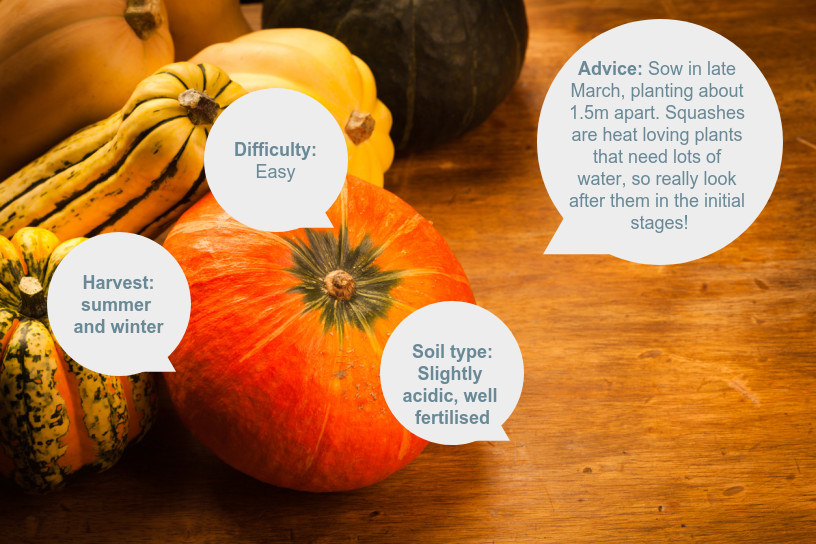
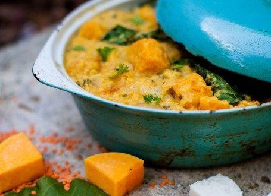
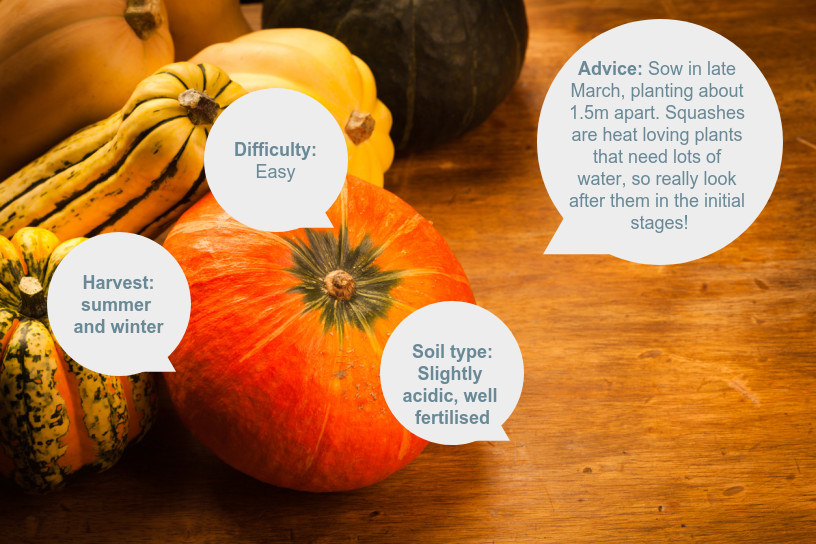
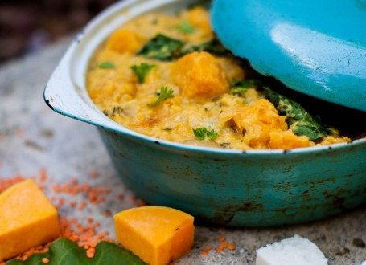

Squashes are actually members of the same family of vegetables as the courgette - the Cucurbitaceae family.
Grow
Squashes are easy to grow from seed, and they prefer to be started off inside from pots, but can also be sewn directly outdoors. The best time to sew these seeds is April to June.
Water: These are thirsty plants, so make sure you keep their soil nice and damp.
Food: To keep these plants happy, feed them every 10-14 days with a high potash liquid fertiliser once the first fruits start to swell.
Harvesting: Harvest your squashes while they are still quite small (10-12cm long) to ensure a long cropping period. A squash can usually last well if kept in a dark spot.
Bonus:
All parts of the squash family are edible - harvest some of the flowers to add to salads or stuff with goat’s cheese.
Goes well with:
Squashes can work as a delicious side, or as the key ingredient in a warming curry or soup on a cold winter’s evening.
Recipe: Squash, red lentil & coconut curry
Ingredients:
2 medium organic butternut squash
7 cloves organic garlic, chopped
6 inches fresh ginger, grated or finely chopped
6 medium organic onions chopped
1.2 litres bone broth
500g organic red split lentils
1 tsp black pepper
1 bar organic creamed coconut
2tsp or more tumeric
organic baby spinach
sea salt
2 small limes, juiced
150g fresh corriander, washed well
Method:
Peel the squash and dice into 1 inch chunks.
Place the garlic, onion, ginger and squash into the pan with the creamed coconut and cover with just over 2 litres (8 cups) of water or homemade bone broth.
Put the lid on and bring to a medium simmer.
10 minutes later, add the red lentils, black pepper, turmeric and chilli if using, stir and let simmer on medium for a further 15-20 minutes until the lentils are soft and the squash is tender. You might wish to add the extra 200ml (1 cup) of water during cooking – it depends if you like your stew thicker or thinner.
In the last few minutes, add the sliced cabbage/greens and stir through. If using spinach, just add when you turn off the heat so it wilts.
Turn off the heat, add the sea salt and pepper, the juice of the lime or lemon and check for seasoning and consistency – it should be like a thick stew – add more water if needs be.
Stir through the roughly chopped coriander and ladle into shallow bowls to serve.


  
 